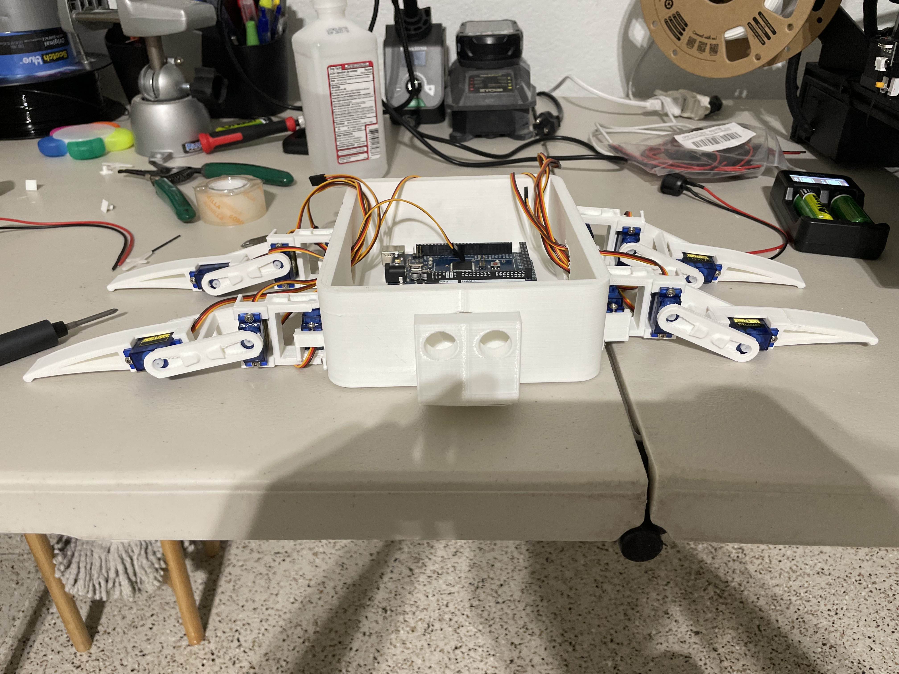
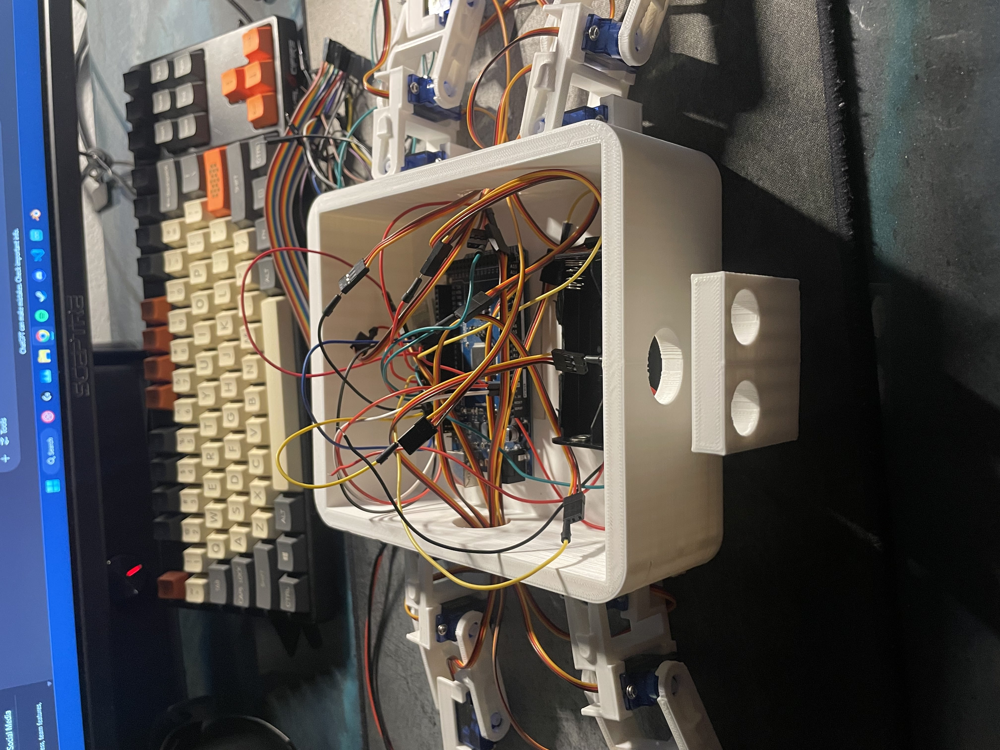
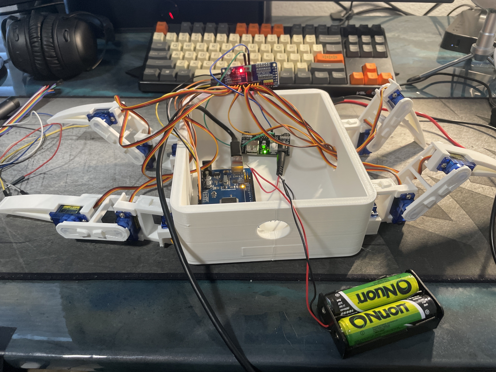

Arduino SpiderBot V1



Project Overview
I built a Bluetooth-controlled "spider" robot with four legs and 12 SG90 servo motors, each leg having 3 degrees of freedom. I used an Arduino Uno for control, a PCA9685 16-channel servo driver, and a DSD TECH HC-05 Bluetooth module for wireless communication. The power is managed through an voltage regulator board which is used to distribute the correct volatage and current to all of the components. I designed the chassis and leg parts in Tinkercad, sliced them in Cura, and 3D printed everything using PLA. The chassis was made to fit all electronics with extra space for future upgrades like sensors. I wired the system with jumper cables and wrote the code in Arduino C++.
Key Features
- Real-time Bluetooth comminication
- Custom 3D-printed frame and motor mounts
- Capability for future upgrades
- Modular design for easy upgrades (e.g., obstacle avoidance)
What I Learned
Through this project, I learned a lot about design and Hardware compatibility. I figured out how to properly feed power to different components and understood the importance of stable voltage, especially when running multiple servos. I genuinely learned how capacitors work and why they're used to smooth out power fluctuations. I also gained a better understanding of what it means for components to be connected in series, and how that affects current flow. On the mechanical side, I learned how to prototype and adjust 3D models for accurate printing, making sure everything fits and functions as intended. Finally, this project pushed me to write better, more efficient C++ code for controlling multiple motors and handling Bluetooth communication.